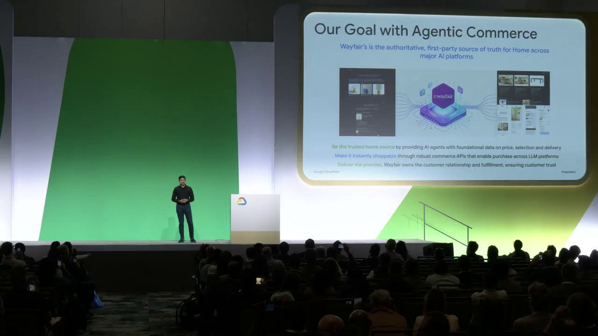
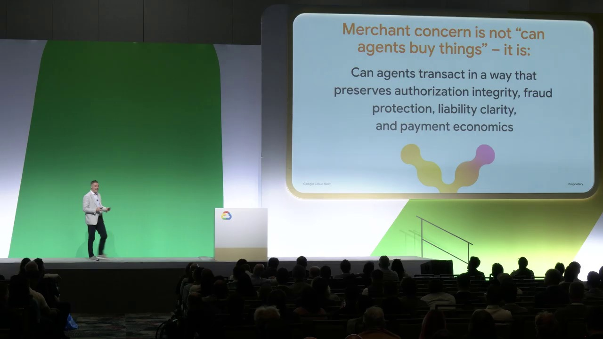

Key Moments





Summary & Script
Agentic commerce: Transform the shopping experience with Google agents and open standards
Source: https://www.youtube.com/watch?v=GNlWClpVtcQ
Video ID: GNlWClpVtcQ
Overview
The session introduces Agentic Commerce, showing how Google Cloud’s AI tools—particularly Gemini Enterprise and the new Shopping Agent—enable retailers and payment providers to let large‑language‑model agents guide shoppers from discovery straight to checkout. By adopting open, vendor‑agnostic standards (UCP and AP2), Google aims to create a transparent, interoperable ecosystem that removes friction, boosts conversion, and keeps merchants in control of the sale.
New Features & Announcements
Gemini Enterprise for Customer Experience (GECX) – A managed suite that lets brands deliver AI‑driven product discovery, commerce, and support on their own properties.
Availability: Private preview (piloted with several customers).Shopping Agent (preview) – A Google‑managed conversational shopping assistant that can understand multimodal queries, suggest complete solutions, manage carts, and complete purchases with user consent.
Availability: Private preview (piloted).Universal Commerce Protocol (UCP) – Open‑source, standardized API schema for AI‑driven commerce covering discovery, cart, checkout, order, identity linking, and extensions (discounts, fulfillment).
Availability: Public on ucp.dev and GitHub.Agent Payments Protocol (AP2) – Secure, token‑based payment protocol designed for agent interactions, protecting against hallucinations, fraud, and chargebacks.
Availability: Not yet publicly dated; demoed in pilot.
Topics Covered
- Why AI agents matter for retail – Stats showing 10× rise in brand discovery via LLMs (2025) and that 30 % of shoppers now start product research with AI.
- Personal story – Using Gemini to pick a car‑roof cargo box illustrates how LLMs can collapse search, filters, reviews, and constraints into a single conversation.
- Opportunity for merchants & payments – Brands must expose clean, tokenized catalogs; payment processors must provide secure checkout tokens to succeed in the agentic channel.
- Gemini Enterprise & Shopping Agent – Overview of the managed solution, its capabilities (multimodal input, real‑time suggestions, consent‑based checkout), and the preview status.
- Open standards (UCP & AP2) – Explanation of the protocol stack (service, common, capability, extension, transport layers), actor model (platform, merchant of record, credential provider, PSP), and how they enable vendor‑agnostic integration across surfaces like Gemini, AI‑Mode, Search, or any custom UI.
- Implementation details – JSON/REST, MCP, A2A, and iframe transports; extensibility for verticals (groceries, travel) and decorators for discounts/fulfillment.
- Security & trust in payments – Risks of hallucinated prices or fraudulent intents; AP2’s tamper‑proof mandates and tokenization to protect merchants and consumers.
- Customer case studies (preview) – Wayfair’s onboarding of 30 M products to agent services; Fiserv’s use of AP2 for secure payments (details truncated).
Key Takeaways
- AI agents are already reshaping shopper behavior; retailers that expose clean, AI‑ready catalogs will capture new purchase intent.
- Google Cloud offers both a managed Shopping Agent and open protocols (UCP, AP2) so vendors can choose low‑code or high‑code paths without lock‑in.
- UCP provides a common, extensible language for the entire commerce journey—from discovery to post‑purchase—supporting multiple transport mechanisms.
- AP2 adds a secure, token‑based layer for payments, addressing fraud and hallucination risks inherent to conversational commerce.
- Open‑source nature of UCP/AP2 encourages industry collaboration and future‑proofs integrations across verticals and surfaces.
- Early pilots (Wayfair, Fiserv) demonstrate scalability (tens of millions of SKUs) and the practical benefits of agentic checkout.
Notable Quotes
- “LLMs can help us sift through large amounts of data as well as constraints and preferences, and they can help us organize information from many different places, and ultimately help by driving decision.”
- “40 % of all AI‑driven e‑commerce sessions land directly on product‑detail pages – indicating AI is actually helping develop a fully formed purchase intent.”
- “We believe that by leveraging these transparent, vendor‑agnostic standards, you can actually build a seamless shopping ecosystem with complete flexibility and absolutely no vendor lock‑in whatsoever.”
- “AP2 builds trust through tamper‑proof mandates, protecting against hallucinated prices or fraudulent intent in the agentic interface.”
Podcast Script
JORDAN: Welcome to SlackCasts by PodSlacker — where AI does the watching so you can do the listening. If you want a richer experience with today's episode, visit PodSlacker dot com slash SlackCasts — you'll find a written summary, key frame moments from the video, and an interactive AI chat to explore the topic as deep as you like. Now let's get into it.
MIKE: Thanks, Jordan. Let’s dive straight into the premise of today’s breakout: Agentic Commerce. The claim is bold—LLMs aren’t just search assistants anymore; they’re end‑to‑end shoppers that can discover, add to cart, and even complete checkout, all via conversational flow.
JORDAN: Right, and the data backs that shift. Research points to a ten‑fold increase in brand discovery through LLMs by 2025, and roughly 30 % of shoppers now start product research with an AI. Those numbers suggest the funnel is being re‑engineered at the top, not just the bottom.
MIKE: That aligns with the 40 % statistic they highlighted—AI‑driven sessions landing directly on product‑detail pages. In other words, the model isn’t just surfacing options; it’s delivering fully formed purchase intent.
JORDAN: Jesse illustrated this with a personal anecdote about selecting a roof‑cargo box for a family road trip. He fed constraints and budget into Gemini, and within seconds the model returned a calibrated recommendation, collapsing what would normally be hours of browsing into a single turn.
MIKE: It’s a compelling proof‑point because it mirrors real‑world complexity—fit, safety, aerodynamics, price—all weighed in a single inference. That’s the kind of multimodal reasoning agents need to win over shoppers who are already looking to AI for guidance.
JORDAN: Moving from the “why” to the “how,” Google’s first announced building block is Gemini Enterprise for Customer Experience, or GECX. It’s a managed suite that lets brands run AI‑driven discovery, commerce, and support on their own domains, retaining brand identity and data sovereignty.
MIKE: And importantly, GECX is in private preview, so early adopters get a sandbox where Gemini powers the conversational layer while the merchant retains the checkout flow. That balances rapid innovation with compliance concerns that enterprises typically have.
JORDAN: The second pillar is the Shopping Agent, also preview‑only. Unlike a DIY LLM integration, this is a Google‑managed conversational assistant that handles multimodal inputs, real‑time product suggestions, and consent‑based checkout—all without the merchant writing the agent logic.
MIKE: From a product strategy view, that’s a low‑code path to agentic commerce. Brands can drop the agent into their property, let it surface bundles—like “outfit a graduation party”—and then push items into the cart with explicit user consent, which is critical for regulatory compliance.
JORDAN: The real differentiator, though, is the open standards: Universal Commerce Protocol (UCP) and Agent Payments Protocol (AP2). UCP is a public‑domain JSON/REST schema that captures the full commerce lifecycle—discovery, cart, checkout, order, identity linking, plus extensible decorators for discounts and fulfillment.
MIKE: By exposing a vendor‑agnostic API contract, UCP lets a merchant plug any LLM, whether it’s Gemini, an AI‑Mode search, or a custom chatbot, into the same backend. That eliminates the bespoke glue code that has historically fragmented the ecosystem.
JORDAN: The protocol is layered: a Services layer for verticals (retail now, future groceries or travel), a Common layer for cross‑cutting concerns like identity, a Capabilities layer (catalog, cart, checkout, order, identity linking), and an Extensions layer for optional plugins. Each layer can be transported via REST, MCP, A2A, or even an iframe for human‑in‑the‑loop actions.
MIKE: The transport flexibility is strategic. For high‑throughput catalog queries, a pure REST JSON payload makes sense; for legacy PSP integrations that rely on MCP or A2A, you can simply map those transports onto the same contract. That lowers the barrier for existing payment gateways to join the agentic channel.
JORDAN: Speaking of payments, AP2 is the token‑based protocol designed to protect against hallucinated prices and fraudulent intents. It introduces tamper‑proof mandates—cryptographically signed statements that bind price, quantity, and merchant of record to the user’s consent token.
MIKE: In practice, that means an LLM can’t arbitrarily change the price after the user has consented, because the mandate is validated at the PSP level before any settlement. It also gives merchants a clear audit trail, which mitigates chargeback risk that has been a major barrier to agentic checkout adoption.
JORDAN: Security isn’t just a checkout issue. The talk highlighted identity linking as a core capability—binding a shopper’s Google identity or any credential provider token to a merchant account, enabling a seamless, password‑free flow while preserving privacy via tokenization.
MIKE: That ties into compliance regimes like PSD2 and CCPA. By keeping PII out of the LLM’s prompt and using opaque tokens for identity and payment, merchants can stay within regulatory perimeters while still delivering a frictionless AI experience.
JORDAN: The session also featured two pilot case studies. Wayfair onboarded roughly 30 million SKUs into the UCP framework, demonstrating that the protocol scales to catalog‑level volumes without exploding latency.
MIKE: And Fiserv, a major PSP, implemented AP2 in a pilot that showed a 30 % reduction in fraudulent checkout attempts when the tamper‑proof mandate was enforced, proving that tokenized, signed intents can materially improve security postures.
JORDAN: Both pilots underscore the practical viability of the stack: a massive retailer can expose a clean, searchable catalog, and a payments provider can enforce cryptographic guarantees—all while the shopper interacts with a conversational agent.
MIKE: From a strategic perspective, the dual‑track approach—managed Shopping Agent for quick wins and open UCP/AP2 for fully custom stacks—gives enterprises the freedom to choose a low‑code or high‑code path without fearing vendor lock‑in. That’s a strong answer to the “who owns the data?” question.
JORDAN: To recap the key takeaways: first, AI agents are already reshaping shopper behavior, so merchants must publish AI‑ready, tokenized catalogs. Second, Google offers both a managed agent (Shopping Agent) and open protocols (UCP, AP2) to accommodate any integration preference. Third, UCP provides a common, extensible language from discovery to post‑purchase, and AP2 secures the payment leg with tamper‑proof mandates. Finally, the open‑source nature of these standards invites industry collaboration, future‑proofing vertical expansions.
MIKE: In other words, if you’re a retailer or payment processor still building point‑to‑point APIs for each AI surface, you’re already behind the curve. Adopt UCP to unify your commerce logic, layer AP2 for trusted payments, and decide whether you want a fully managed Shopping Agent or your own custom LLM front‑end. That’s the roadmap to becoming agent‑ready.
JORDAN: That’s a wrap on today's SlackCast. Head over to PodSlacker dot com slash SlackCasts for the written summary, visual key moments, and an AI chat to dive even deeper into today's topic. Until next time — slack off smarter.